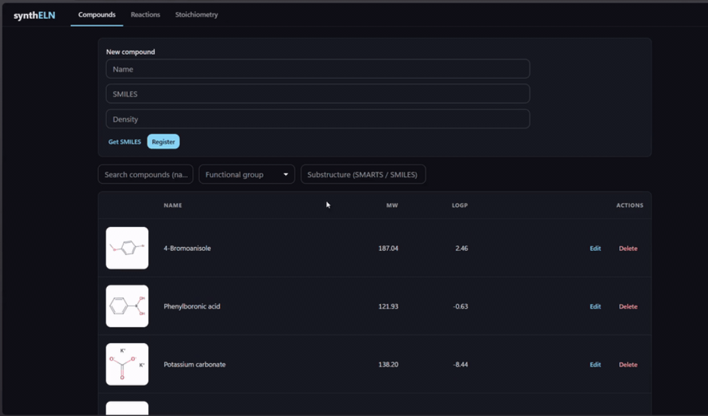

電子実験ノート（ELN）
個人開発 / 2026〜
化学反応の記録・管理を目的とした電子実験ノート（ELN; Electronic Lab Notebook）です。SMILES 記法で化合物を入力するだけで、RDKit が自動計算した分子量・LogP・InChIKey などの物性値を PostgreSQL に保存し、FastAPI 経由で React フロントエンドに表示する、という一連のパイプラインを備えています。
ケモインフォマティクスとインフラ設計の実践的な習得を目的として、データベース設計・API 実装・化学計算までを一通り自作しています。
Python
FastAPI
PostgreSQL
React
RDKit